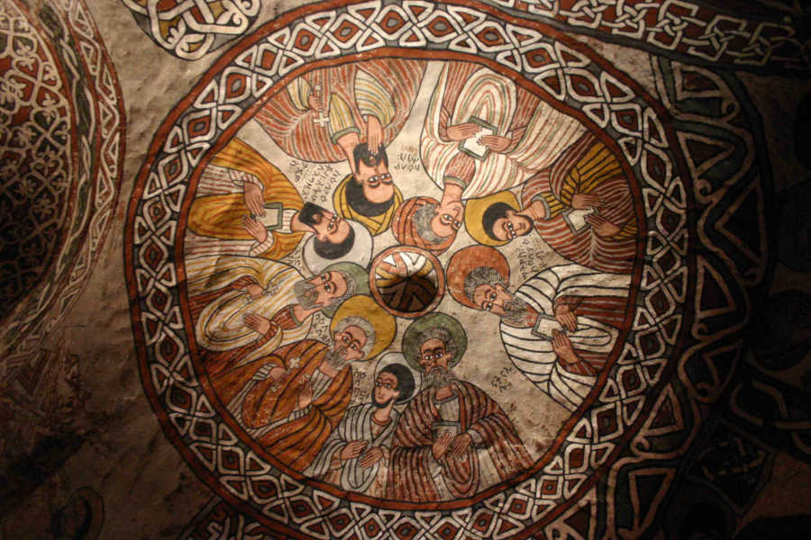

(Nigrizia giugno 2016 - qui il pdf)
Yemata Guh, la chiesa in "free solo"
Una chiesa tra le montagne del Gheralta nel Tigray è scavata in una parete rocciosa, e per entarci si deve percorrere una cengia a strapiombo sul vuoto, senza corde e a piedi nudi
Testo, foto e cartografia di Fabio Artoni

Quando avevamo appena cominciato a salire loro stavano scendendo. Li vedevamo là in alto, in un canalone tra due torrioni di roccia rossa. Indossavano scialli bianchi e scendevano veloci. Il sole era sorto da poco e loro erano già di ritorno dalla messa. La guida domandò se anche in Europa si andava a messa la mattina presto e gli dissi che accade, talvolta, ma che spesso succede anche a quelli che hanno paura di non trovare parcheggio. Sorprendente, rispose. Li incrociammo sotto un albero, in silenzio, con tra le mani qualche sfoglia di pane, mentre si preparavano ad ascoltare i consigli per i prossimi lavori agricoli. Aveva appena piovuto e le famiglie avrebbero preparato gli aratri, stretto accordi per l'uso dei buoi, deciso quante volte ripassare il terreno. Nel gruppo c'erano uomini e donne adulti e anziani. E qualche bambino piccolo, ancorato alla schiena della madre o della nonna con lo scialle bianco, lo shamma. Se tutti quanti erano saliti e scesi dalla chiesa nella roccia di Abuna Yemata Guh forse non si trattava di una cosa troppo pericolosa né troppo difficile. E infatti non è pericolosa né difficile, disse la guida, basta solo non guardare giù.
Abuna è il nome per i santi della chiesa ortodossa d'Etiopia e Yemata è uno di quei famosi nove che nel quinto secolo arrivarono dalla Siria e diffusero il cristianesimo in un regno africano, quello di Axum, che già si era convertito a Cristo duecento anni prima. Quando Yemata vide sorgere l'alba, splendente tra queste montagne del massiccio del Gheralta, nel Tigray, disse che era un cosa meravigliosa, Guh in tigrino; e quello rimase il nome per queste guglie e per la sua chiesa. Questo è quello che dice la tradizione ma in realtà la chiesa nella roccia di Yemata Guh è di circa mille anni più giovane, del quindicesimo secolo, in piena era detta del rinascimento monacale etiopico, quando i monaci trovarono in cima alle ambe e nelle rocce il posto migliore per farne monasteri e chiese; e continuare a meritarsi il privilegio di essere il popolo, l'Etiopia, che secondo le scritture tenderà le mani a Dio. Abuna Yemata li ispirò e il costruttore, ignoto, trovò una cengia a metà parete di un torrione, dove si poteva stare a lavorare con martello e scalpello, e gli artigiani cominciarono a scavare, dal basso verso l'alto. A una decina di centimetri dai loro piedi c'era uno strapiombo di duecento metri, a picco su una vallata dove ora c'è il piccolo villaggio di Megab.
Arrampicata per accedere al versante principale della parete di Yemata Guh. Da un certo punto in poi, non si possono indossare le scarpe.
Cominciano i consigli per i contadini e la gente sotto l'albero si disinteressa di noi, delle scarpe tecniche e di imbragatura, corda e moschettoni. Meglio così, qualcosa di meno di cui vergognarsi. Yemata Guh è lassù da qualche parte. Non si vede ancora ma scoprirò che non si può vedere da nessuna parte dal basso. Praticamente, è invisibile. Quando arriviamo a una parete verticale la guida prepara l'attrezzatura. Lo scorso anno ha seguito un corso di arrampicata in sicurezza e ogni tanto porta in giro qualche turista, ma la maggior parte del tempo lavora nei campi. Mi spiace per lui ma la prospettiva che questo posto abbia presto una pista asfaltata, baretto e servizio bancomat, come vicino a Lalibela, è ancora lontana. Gli istruttori erano guide alpine italiane, invitate dalle persone del Gheralta Lodge, uno di quei rari esempi di posti dove prima di dedicarsi al turismo culturale ci si dedica con passione all'inculturazione. Sicurezza a parte, il corso deve avere sollevato guide e turisti dall'imbarazzante contatto testa contro natiche per spingere in su a forza i meno agili. Una di queste guide italiane l'avevamo incontrata in un bar di Ponte di Legno. Guh e Ponte di Legno... che il mondo si sia ristretto lo dice anche il perfetto nodo a doppio otto che a un tratto pendeva dal mio moschettone.Come ogni monastero o chiesa ortdossa, antica, anche Yemata Guh ha la sua collezione di testi sacri, scritti e illustrati a mano su pergamena, con du inchiostri, rosso e nero. A destra l'apertura verso l'esterno, direttamente su quattrocento metri di vuoto, a parte una cengia di mezzo metro che si deve fiancheggiare orizzontalmente.
Con la corda tesa si può arrampicare in sicurezza però bisogna farlo senza scarpe. Da quella parete in poi si può proseguire solo a piedi nudi. In ogni chiesa ortodossa è una cosa che si fa prima di entrarvi ma questo significa che da qui verso Yemata Guh, anche la roccia e la sabbia e gli alberi e il vento sono consacrati. Alcuni appigli sono gli stessi da più di mezzo millennio. Quelli per i piedi sembrano orme di dita affondate nella plastilina; ampi e porosi ma anche arrotondati e sfuggenti. Dopo dieci metri di parete la corda non si userà più, gli appigli sono più facili da raggiungere e sulla cengia che porta alla chiesa non ci sono corde fisse per assicurarsi. Ma come ripete la guida, se si ha paura basta non guardare in giù. Passiamo accanto a una cavità dove un mucchio di ossa imbianca al sole. Di chi sono questi crani e tibie e femori, e cosa ci fanno qui? La guida dice che sono di persone speciali: anziani importanti, eremiti e monaci. Tutta gente che si è meritata questo posto. Un sacerdote cattolico, tigrino, mi raccontò di quanto il monachesimo sia ancora oggi la spina dorsale della religione ortodossa. Cercò un verbo che cercava di tradurre il passaggio dalla vita secolare a quella spirituale e che in amarico è felese. Non lo trovò ma credo che fosse come uno strappare senza dolore e un trasportare senza leggerezza. Di santi e monaci è piena la vita dei cristiani ortodossi d'Etiopia. Come Teklaimanoth, di cui si dice si cibasse solo di foglie dolci. Ma, in fondo, anche questa spada di Damocle sui foodies d'occidente si concedeva il suo piccolo lusso perché durante il digiuno – 255 giorni all'anno, la regola più che l'eccezione - mangiava solo foglie amare.Si rifiata su due lastroni di roccia piana, vicino a una cavità che serve da fonte battesimale. Ci sono due fili elettrici. Possibile che abbiano portato fin qui un generatore? Dimentico la risposta perché si vede la cengia che si stringe, si annusa lo strapiombo e appare un panorama di guglie e ambe. Sono le montagne del Koraro, la parte a sud ovest del Gheralta. Se non fosse stato così comodo a casa sua, John Ford avrebbe potuto girarci Ombre Rosse. Ci sono due tronchi che fanno da ponte, nella stessa posizione di una carta disegnata da Ivy Pearce nel 1970. L'ingresso della chiesa è dietro l'angolo ma di sotto c'è il vuoto. Con i piedi nudi si fa presa meglio ma si riconosce una minaccia in ogni granellino di sabbia tra le dita. Dopo dieci metri di cengia e luce abbagliante si trova l'ombra; un passo in avanti e si entra nella montagna, i primi due metri scavati dagli scalpellini ispirati da Abuna Yemata. La guida è contenta della sua capacità organizzativa, il diacono che ci aspetta ha la chiave per aprire una porta di legno. La luce spalanca un'altra porta ma gli occhi si devono abituare al contrasto. Quattro pilastri interni portano il peso della montagna. Si sente prima il velluto dei tappeti sotto i piedi e poi le ombre degli affreschi prendono forma e colore: sulla prima volta ci sono nove degli apostoli mentre Tommaso, Paolo e Pietro sono dipinti sulla parete; di fronte una Madonna con il Bambino. Nella seconda volta ci sono otto dei nove santi; il nono è Yemata ed è sulla parete di fondo, a cavallo e accompagnato da altri santi. Tra di loro c'è un leone e due figure antropomorfe. Sono dipinti di profilo, con un occhio solo, e capisco anch'io che sono i malvagi. Uno ha in mano un falcetto. Cosa hanno fatto di male? Pare che avessero preferito il materiale allo spirituale, l'avere all'essere, sbrigato affari quando invece era tempo di pregare, mangiato quando era tempo di digiunare. 
La parete a volta scavata nella roccia con raffigurati i nove santi
I dipinti sono del sedicesimo secolo, mano ignota, colori accesi, turbanti appoggiati sulle teste. Se è vero che l'architettura è musica pietrificata questo ambiente suona come una melodia medio orientale. A Yemata Guh ci sono forse gli affreschi più belli di tutte le chiese nella roccia del Tigray; che sono tante, più di centocinquanta, e molte sono concentrate qui, tra il massiccio del Gheralta. Non sono chiese da museo né attrazioni turistiche e neppure riserve di studio per gli accademici; la maggior parte fanno quello che hanno sempre fatto: posti dove i fedeli si ritrovano per celebrare ecucarestie, nascite, unioni, morti.Di queste chiese fino al 1966 se ne sapeva poco niente. Fino ad allora nessuno di quelle migliaia di contadini e pastori e bambini che avesse avuto l'idea di prendere per la giacca qualche antropologo, esploratore, geologo e dirgli “Vieni, ti devo far vedere una cosa...”. Omertà assoluta, o quasi. Poi quell'anno, in una conferenza, il prete cattolico Tewolde Medhin sbalordì gli accademici d'Etiopia raccontando di questi posti. E con l'eccitazione che al mondo c'era ancora qualcosa da scoprire arrivarono gli studiosi: David Buxton e Ivy Pearce, Ruth Plant, Claude Lepage e Jaques Mercier. E poi i loro bellissimi libri. E ipotesi e certezze. Queste chiese vennero scolpite tra il decimo e il sedicesimo secolo e gli stili variano dal più antico della basilica etiopica arcaica che si rifaceva alle costruzioni axumite fino allo stile della basilica tigrina, il più diffuso nel cluster del Gheralta. In generale nessuna relazione con le chiese monolitiche di Lalibela. I costruttori sceglievano lo stesso tipo di roccia, solida e compatta ma lavorabile. I monaci salivano in alto per desiderio di distacco, solitudine e anticipazione del paradiso ma comunque caverne e anfratti hanno sempre avuto a che fare con la Natività. Le chiese non erano costruite per nascondersi da minacce, tranne forse Yemata Guh. Nei libri specialistici ricorre spesso la parola arcaicità e cristianesimo delle origini. Qui in alto questa arcaicità mi sembra viva e vegeta. La chiesa è piccola e anche se la gente a messa stava seduta su delle specie di tralicci in legno d'ulivo non ci sarebbe certo stato spazio abbastanza per le cinquanta persone che avevamo incontrato sotto l'albero. Dove avevano seguito la celebrazione? Lì di fuori, sparsi tra il fonte battesimale e il cornicione con sotto il vuoto. Quando c'è un battesimo mamma, bambino e parenti si fermano alla fonte; gli officianti arrivano con l'incenso e l'acqua; fanno quel che devono e poi la madre prende in braccio il bambino, si avvia serena sul cornicione ed entra in chiesa. Gli accademici sono preoccupati dello stato di conservazione di queste chiese. Quanto alle persone, provano in tutti modi a conservarsi curando lo spirito e la loro terra. Se l'Unesco metterà il patrocinio e qualche targa su Yemata Guh dovrà pensare a quei fedeli sotto l'albero, perché senza di loro non ci sarebbe alcun patrimonio dell'umanità.